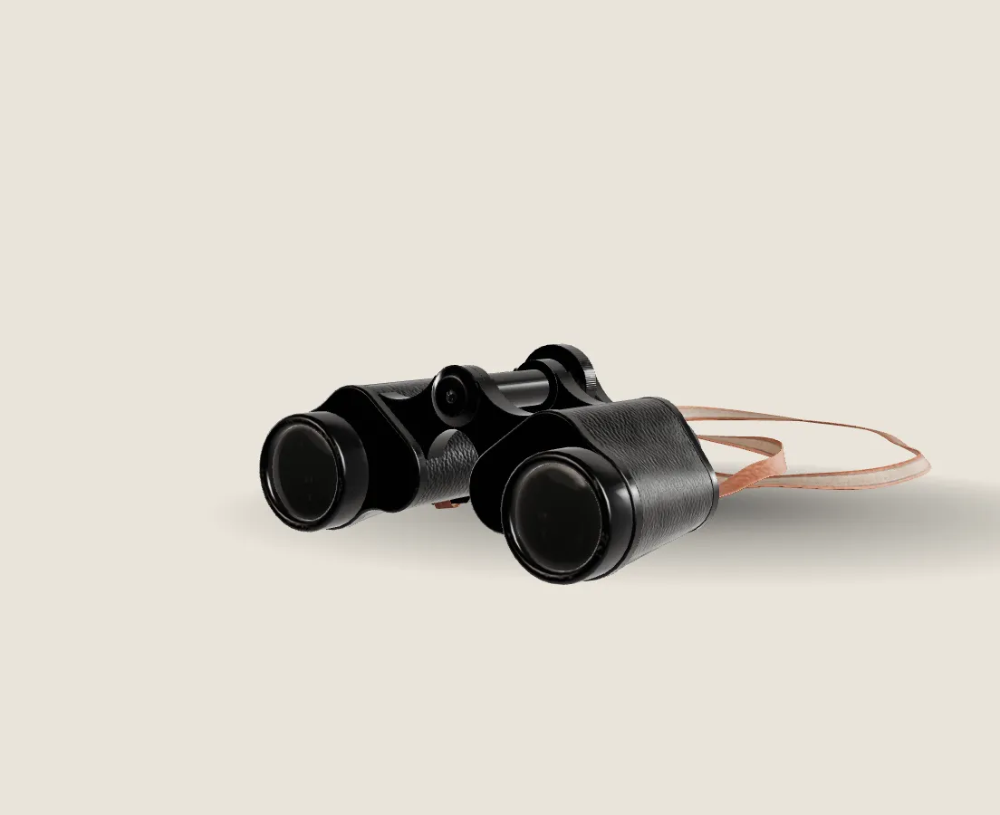

01 · The pair
Built for the dawn chorus.
A compact 8x32 for people who walk out before sunrise. Light enough to forget, sharp enough to name the bird.
Component · scroll-3d-stage
A real scanned product, lit by a studio HDRI, that turns and moves through four chapters as you scroll. Eased, lazy, pauses off screen, and falls back to a poster without WebGL.

Fieldnote Optics · Concept · scroll
01 · The pair
A compact 8x32 for people who walk out before sunrise. Light enough to forget, sharp enough to name the bird.
02 · Glass
Fully multi-coated lenses and a 7.5 degree field, so a moving wren stays in frame.
03 · Eyepieces
Twist-up eyecups with three stops and a centre focus wheel you can turn with gloves on.
04 · Carry
Concept product for this demo. Fieldnote is a fictional brand.
The phone loads the same 19,248-triangle scan, the same textures and the same studio light. Only the layout changes.
Copy the folder scroll-3d-stage/ (the .js and .css files) into your project. No build step and no framework.
prefers-reduced-motion: no glide and no idle sway; each chapter is a still of its keyframe.<script type="importmap">{ "imports": {
"three": "/vendor/three/three.module.min.js",
"three/addons/": "/vendor/three/addons/" } }</script>
<link rel="stylesheet" href="scroll-3d-stage.css">
<div class="s3">
<div class="s3-pin">
<img class="s3-poster" src="poster.webp" alt="...">
<div class="s3-canvas" aria-hidden="true"></div>
<div class="s3-copy">
<article class="s3-ch">...</article> <!-- one per keyframe -->
</div>
<div class="s3-bar"><i></i></div>
</div>
</div>
<script type="module">
import { scrollStage } from './scroll-3d-stage.js';
scrollStage({
section: document.querySelector('.s3'),
model: '/models/binoculars.glb', hdr: '/hdri/studio_1k.hdr',
meshopt: '/vendor/three/addons/libs/meshopt_decoder.module.js',
keys: [ { cam:[0,.25,3.6], look:[-.38,0,0], rot:[.12,-.55,0] },
{ cam:[0,.1,2.5], look:[.36,0,0], rot:[.05,.95,0] } ]
});
</script>| Option | Default | What it does |
|---|---|---|
| section | required | The tall section. Its height (--s3-len, default 420vh) sets how much scroll the story takes. |
| model / hdr | required / optional | GLB file and an equirectangular .hdr for image-based light. |
| meshopt | optional | Path to the meshopt decoder when the GLB is meshopt-compressed. |
| keys | required | One keyframe per chapter: cam (camera position), look (target), rot (model rotation, radians), exposure. |
| size | 1.6 | Model is centred and scaled to this size, so keyframes work for any model. |
| fov / envIntensity / keyLight | 30 / 1 / 1.4 | Lens and light. |